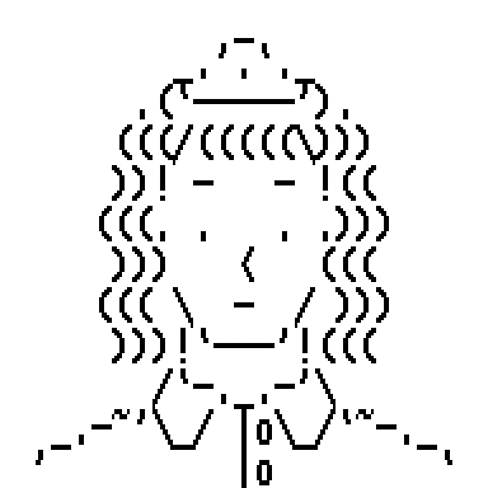

Fascinated by CGI, at the age of 15 Adéla moved away from her native Olomouc to study animation in Brno, with hopes of becoming an animator for video game studios. However, after numerous warnings from several sides not to pursue this path, she finally internalized the disillusionment of working in an exploitative commercial sector and thought better of it. To the joy of rational-actor theorists and the surprise of her family, she decided to diversify her skills to better her chances on the job market and, at the last minute, applied for psychology at Masaryk University.
After another round of disillusionment (and also for the plot), a year later she also enrolled in a second major in sociology. This journey and her eternal nosiness for trying to figure it all out have landed her at the University of Zürich, where she's finishing her master's degree with plans for a PhD to follow. Here, she spends considerable effort trying to make the field less inward-looking and depoliticized.
She snoops in antique shops every Saturday, spends her evenings editing Wikipedia to add more women, and tries to finish all international seasons of The Traitors. All the time, though, in the back of her mind, she continues to wonder why things are the way they are – and whether they could be different.

Can't see the CV? Open the PDF in a new tab →